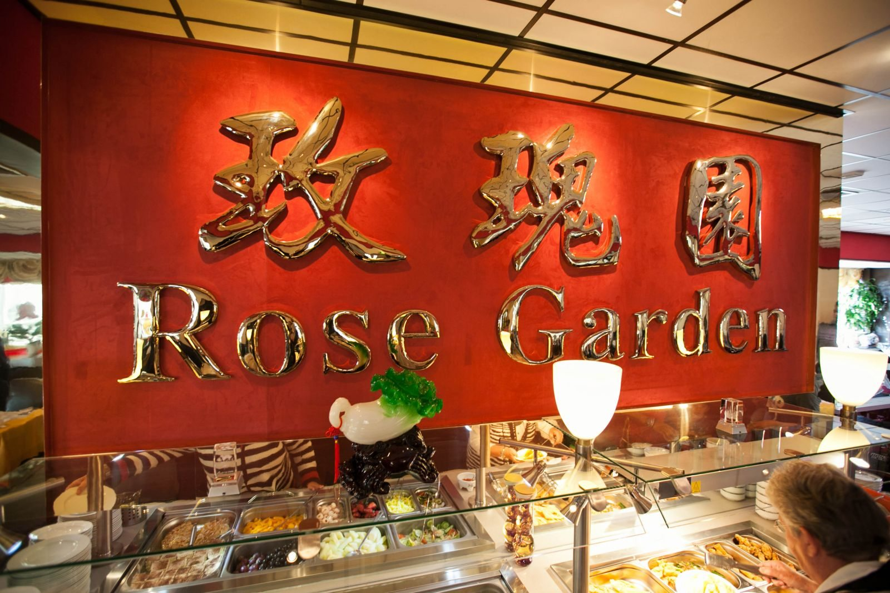
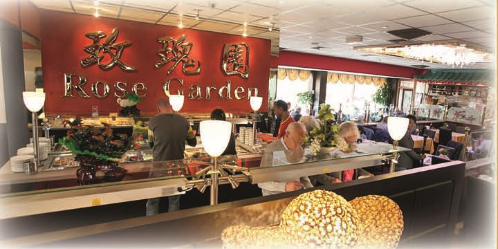
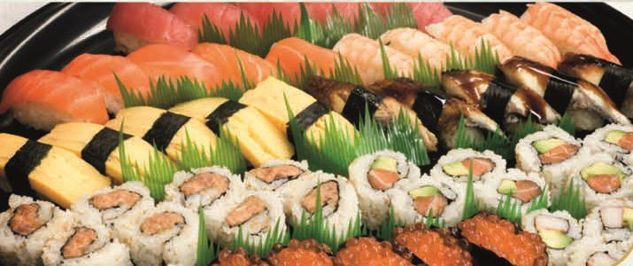
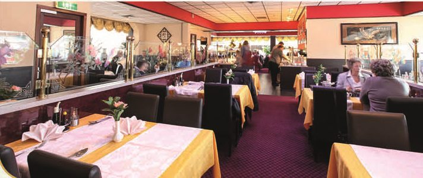
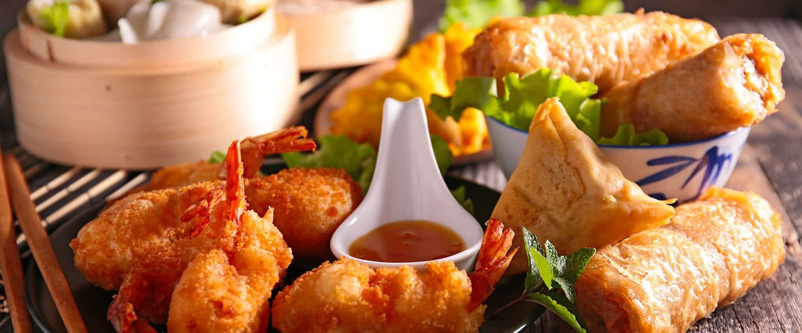

Dagmenu A
- Kipfilet met kerrysaus
- Foe Yong Hai (vegetarisch)
- Babi Pangang
- Koe Loe Kai
- Mini loempia's
- Kroepoek
€ 27,70

Chinees Indisch restaurant in Voorburg
Al ruim 60 jaar symbool voor heerlijke Chinees-Indische specialiteiten.
Kom onbeperkt genieten van ons uitgebreide kerstbuffet met een speciaal deluxe gerecht.
Reserveren gewenst. Tijdens kerst alleen lopend buffet, geen à la carte.
Reserveer: 070 - 387 05 82

Onbeperkt genieten, vrijdag t/m zondag en op feestdagen, geopend vanaf 17:00 uur.
Uiteraard kunt u ook genieten van onze vegetarische gerechten.
Culinair genieten. Bezoek ons sfeervolle restaurant en geniet van een heerlijk diner met een ruime keuze uit onze à la carte gerechten.
Afhalen is ook mogelijk: bel uw bestelling door op 070 - 387 05 82.


Alle gerechten voor in het restaurant en om af te halen. Kies een categorie.
Heeft u een allergie? Meld het ons!
Wilt u thuis of op kantoor iets vieren? Wij zorgen voor een lopend buffet bij u thuis.
Warmhoudbakken met vuur die het eten warm houden, opscheplepels: alles wat nodig is wordt bij u thuis klaargezet door onze medewerkers. Vraag naar de cateringmenu's A en B, vanaf € 14,50 per persoon.
Voor inlichtingen of reserveringen kunt u bij ons langskomen of bellen.
Bel 070 - 387 05 82| Maandag | Gesloten (uitzonderingen op feestdagen) |
|---|---|
| Dinsdag | 12:00 - 21:00 |
| Woensdag | 12:00 - 21:00 |
| Donderdag | 12:00 - 21:00 |
| Vrijdag | 12:00 - 22:00 |
| Zaterdag | 12:00 - 22:00 |
| Zondag | 12:00 - 22:00 |
Lopend buffet: vrijdag t/m zondag en feestdagen vanaf 17:00 uur.
070 - 387 05 82
voorburgrosegarden@gmail.com
Ruime parkeergelegenheid. Heeft u een allergie? Meld het ons!